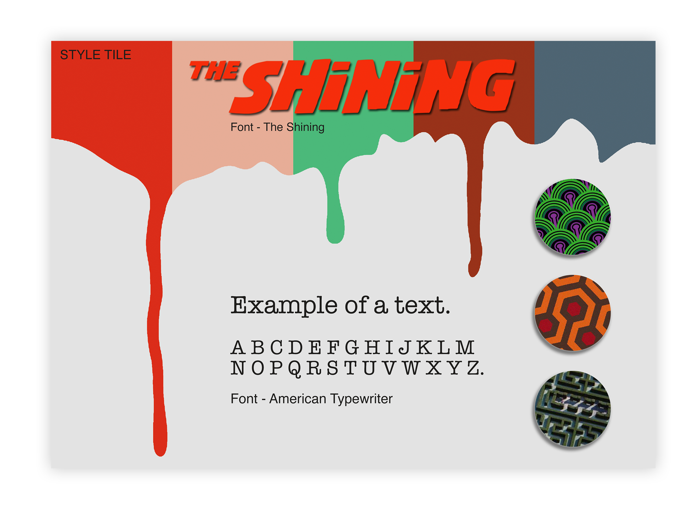
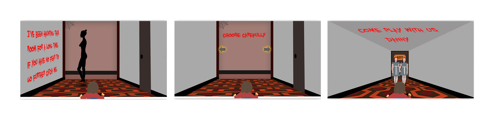
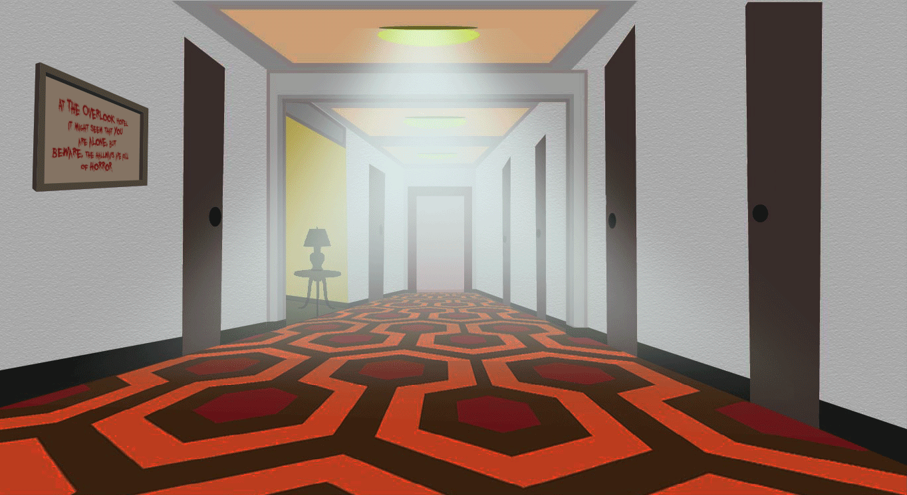
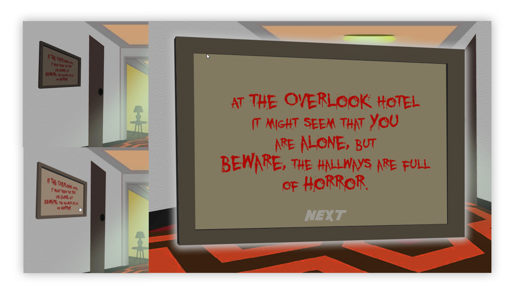
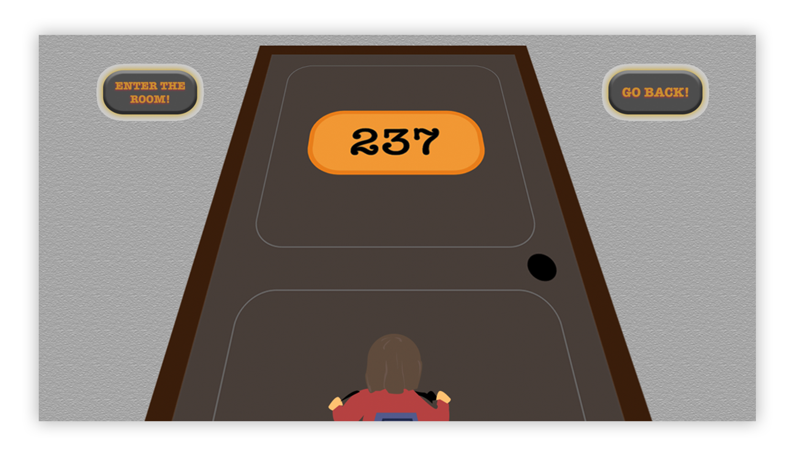
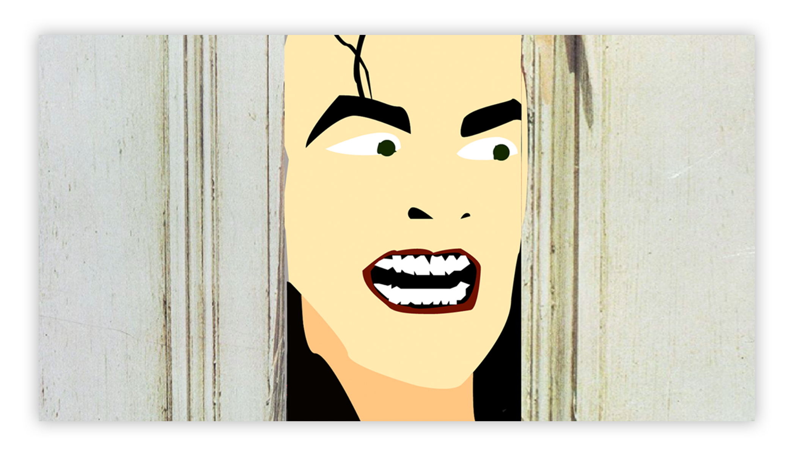
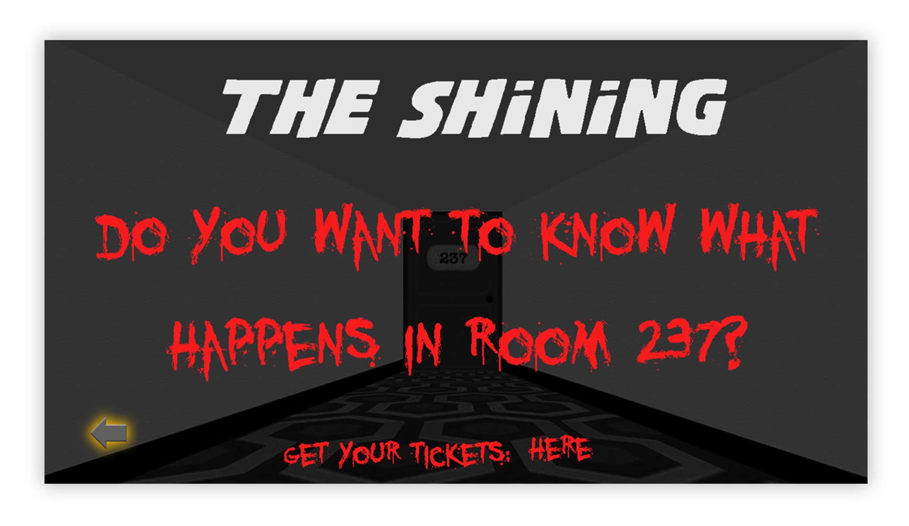
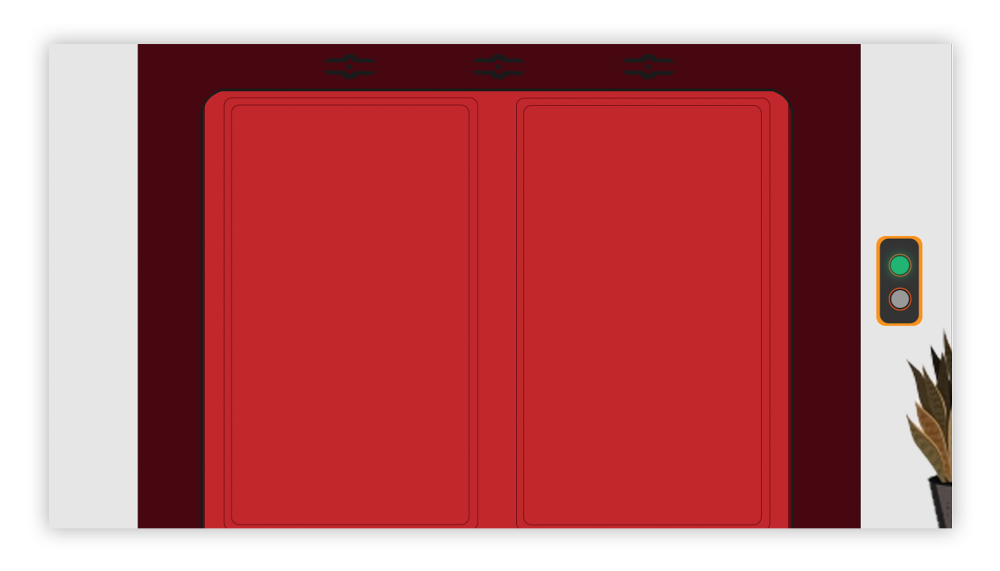

Interactive poster
Goal
We were to create an interactive movie poster for Cinemateket (a cinema by the Danish Film Institute) for one of the movies from their list. The interactive production would evoke interest among young adults in visiting Cinemateket´s screenings. We had to stay focused on our target group as well as keep the artistic style of the movie and bring forward its message effectively.
Process
Style tile / Persona collage / Moodboard
After watching the movie and sensing the overall vibe and message of it we started the creative process by making a moodboard and a persona collage to set a style for our production.

User interaction / Visual production
During the process we defined the most iconic cinematographic moments of the movie, which turned out to be the patterned iconic hallways of the Overlook Hotel and the Danny himself riding his bike through them. We decided to recreate these scenes and add different tasks for the user to finish the movie-poster-game.
The goal was set to include user interaction, therefore we added a few obstacles the user had to get past in order to continue playing, as well as a few choices to be made by the user which would lead to different endings of the story/game to peak their interest in watching the movie.
 The user would be encouraged to engage by using different animated elements such as arrows, text and characters (i.e. glowing Danny, flickering twins, etc.). These interactions automatically engage the user instead of making them passively absorb knowledge about a movie they should watch.
 During the design process we produced plenty of visual assets, based on a moodboard, style tile and a persona collage to appeal to our target audience
 Result
Click the image to view the interactive movie poster!
